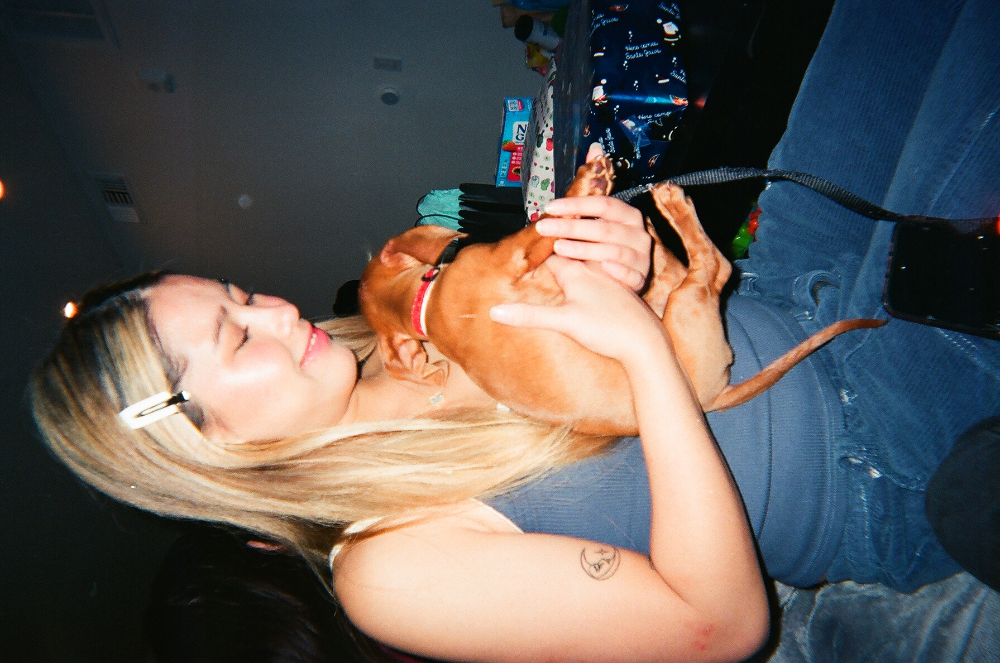
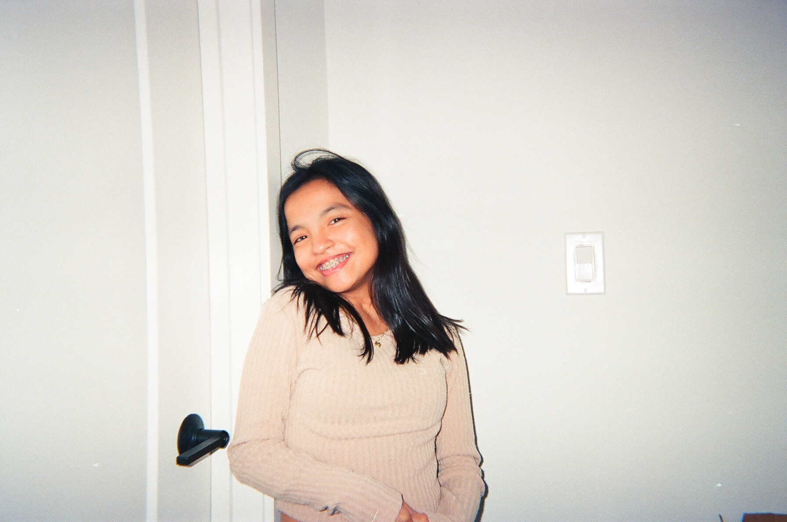
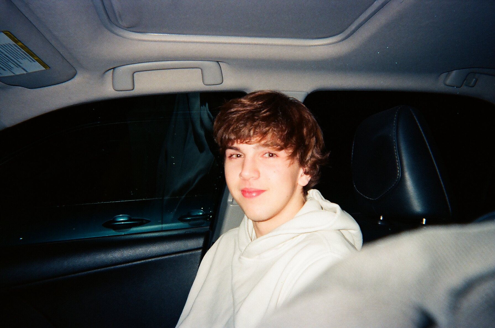
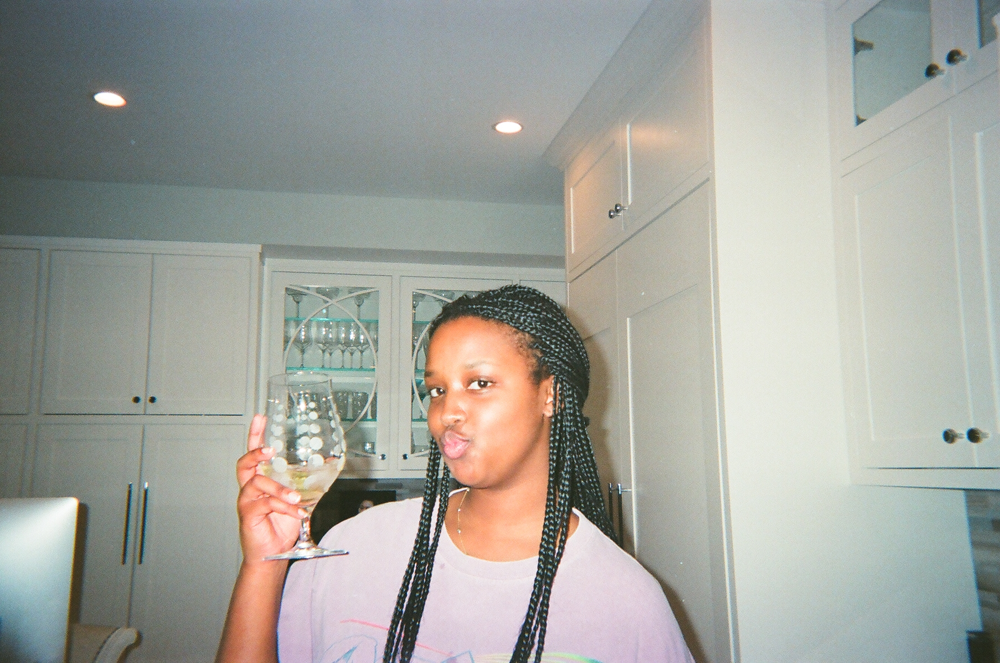
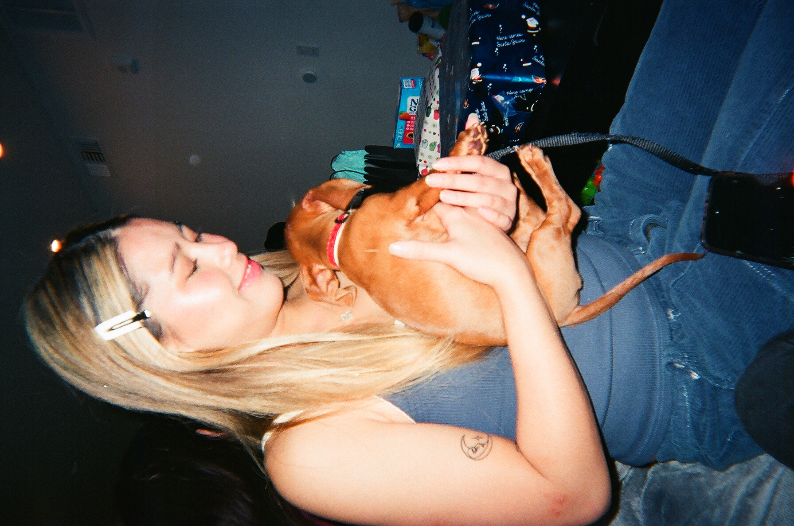
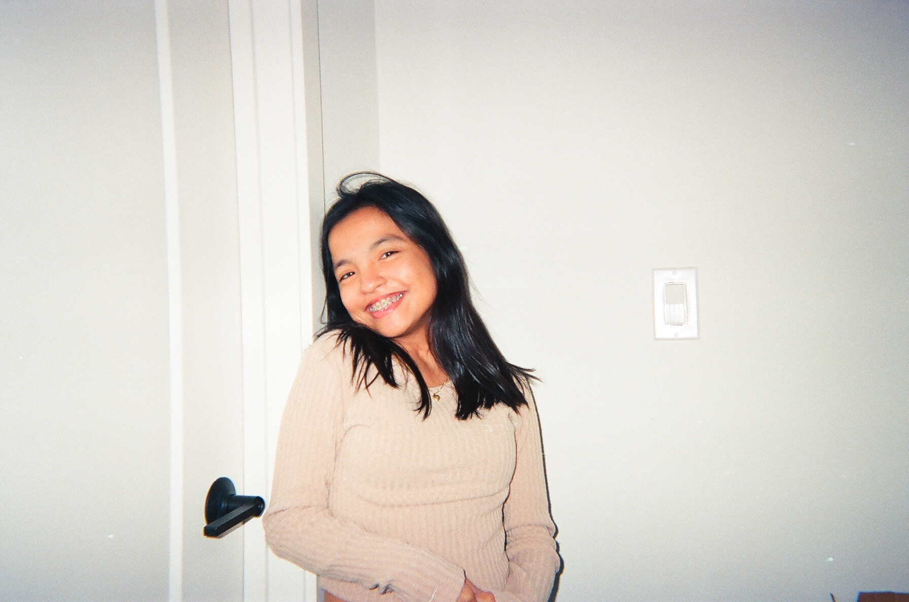
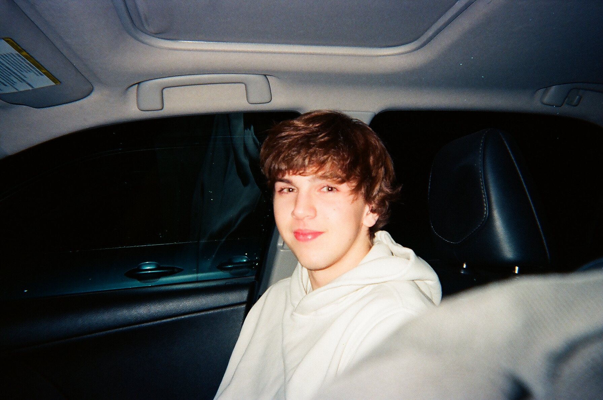
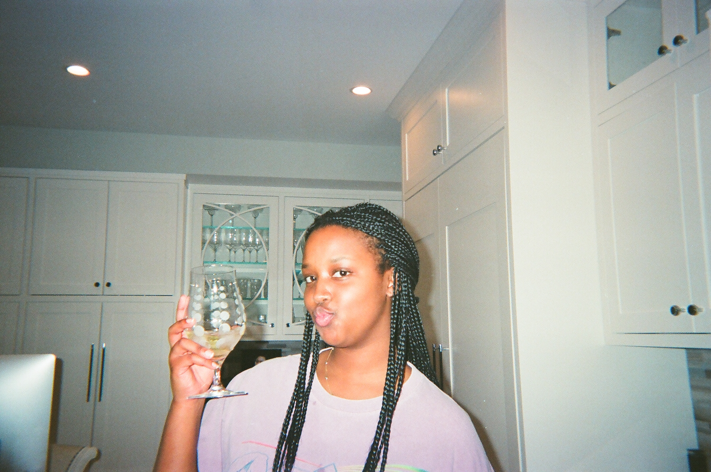

Mikayla Maravilla
Hello my name is Mikayla Maravilla and I am a second year student at University of California Riverside. I am a part of many clubs on campus including the chinese student association and the vietnamese association. I am also a member of a business fraternity on campus, which has improved my journey through the business world. Currently I am a creative writing major that minors in dance, and I plan to use my expertise to help guide my career path. I am a well rounded honors highschool graduate from Chaminade College Preparatory High School who hopes to demonstrate their commitment to providing great service to customers. Organized and dedicated team leader that strives to guide others on their path to success and provide the assistance they need.
Through my journey of college and high school, I became to be a driven and ambitious person who is always willing to learn something new or to adjust to a challenging circumstance. Since I enjoy working with people and fostering others' personal growth, I will be able to put my talents to use and learn new information that will aid me in various settings if i want to pursue a career. My skills include strong leadership ability, hard working mindset, organiaed manners, reliable, very personable, and great communication skills. Some of my weaknesses include, shyness, vulnerability, short attention span, and bravery. I value collaboration and believe in building strong mutually benficial realtionships. I have an understanding og the unique needs of my clients and I strive to exceed their expectations. I am commited to staying at the forefront of industry trends and continually expanding my knowledge. As someone with a background with art, I try to weave that with the professional business aspect of the world. I thrive on innovation and am always eager to explore new ways to learn and teach.
I enjoy cooking and baking, dancing, and going on adventures with my friends and family during my free time. I aspire to be behind the scenes of an idea in the works or of a project to test and expand the depths of my creativity. I specialize in video editing, art, choreographing, public speaking, community outreach, and marketing. Although these are the fields I specialize strongly in, I look forward to learning more and to begin my journey in specializing in other areas. Some of my positions throughout my life include dance captain and dance choreographer for my highschool dance teams that I held for all four years, key club member for all four years, blue crew member for my last two years, and dance teacher for children. I believe in learning and teaching, and that everyone can learn something and it is not too late to learn. My approach is characterized by different learning techiniques that are suitable for any individual depending on the topic. I will be able to bring a unique blend of skill and expertise to the table. Overall, my track record is marked by artistic awards and honor academic awards.
Experience
CSA Intern
• Worked for fundraising, social media, and philanthropy chairs to creat events
• Speaker at general meetings
• Experience with Microsoft, Powerpoint, and Adobe
Tutoring
• More than sixteen hours per week
• Helped children discover their interests and achieve their goals
Dance Teacher
• Choreographed routines
• Updated practice schedules weekly
• Led teammates to success
• Perfected techinque and skill levels of all dancers
Education
Chaminade College Preparatory
University of California Riverside
University of California Riverside
Portfolio






 
 